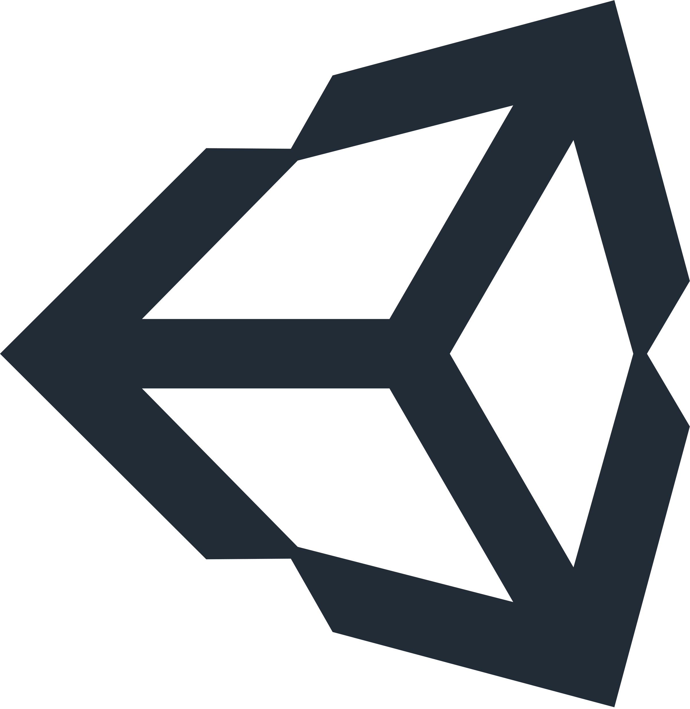
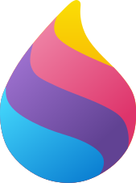
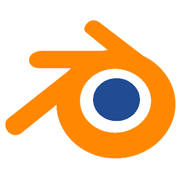
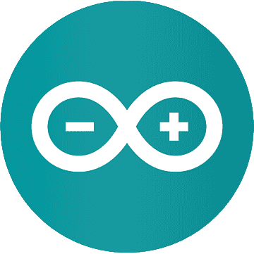
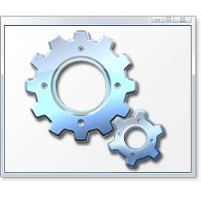
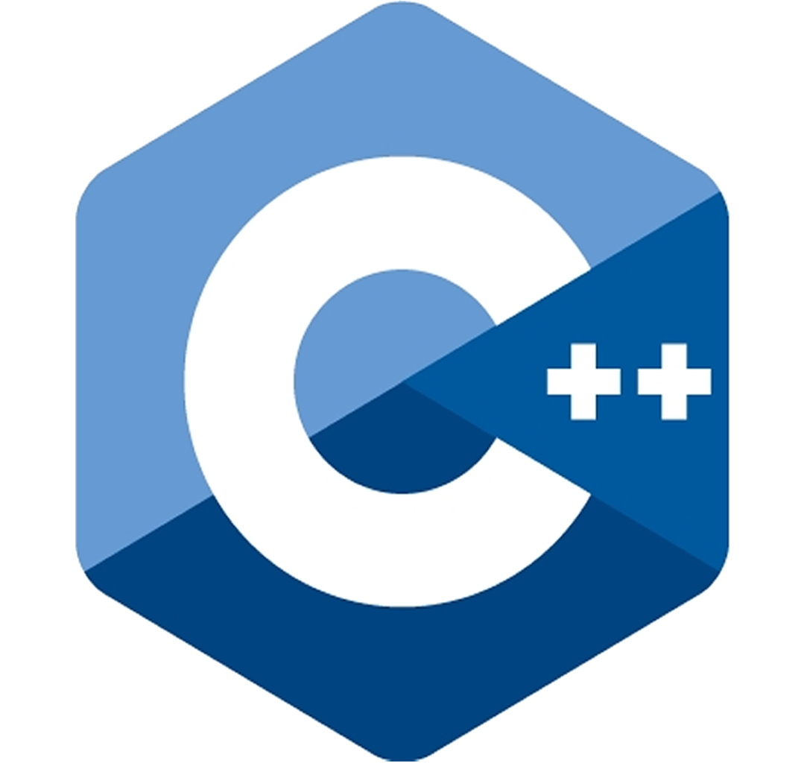

Pendahuluan
Pendahuluan
Assalamualaikum warahmatullahi wabarakatuh, alhamdulillah hirobbil alamin, akhirnya website ini telah selesai dibuat pada tanggal 7 Mei 2026.
Dengan terciptanya website ini diharapkan dapat membantu untuk mencari informasi data diri saya untuk kepentingan perusahaan.
Adapun kepentingan yang melatar belakangi terciptanya website ini yaitu:
- Sebagai profil data diri
- Sebagai media penyaluran bakat
- Sebagai media pameran produk
- Sebagai tempat mengekspresikan diri
Tentang Diri Saya
Perkenalkan nama saya Amiruddin Aziz. Saya adalah seorang mahasiswa Udinus Semarang, kelas semester 1. Saya merupakan salah satu orang yang memiliki ketertarikan pada bidang Game Development, saya suka belajar hal-hal baru tidak hanya di bidang engineering.
Keahlian:
- Game Developer
- Web Developer
- Programmer
- Code Reader
- Advanced User (Power User)
- Hacking Beginner
Bidang non jurusan:
- Pemahaman Ilmu Logika Matematika
- Pemahaman Ilmu Informatika
- Keahlian Bidang Kebugaran Jasmani
- Berenang
- Basket
- Voli
- Kasti
Hobi:
- Membuat Program Hacking Sederhana
- Belajar
- Membuat Game
- Merakit Robot Dengan Arduino
- Berenang
- Bermain Bulu Tangkis
- Bermain Catur
Riwayat Pendidikan
- TK (Taman Kanak - Kanak)
- SD (Sekolah Dasar)
- SMP (Sekolah Menengah Petama)
- SMK (Sekolah Menengah Kejuruan)
~ TK PGRI 77
Pendidikan formal saya pertama kali adalah di TK. Disana saya belajar mengenal huruf dan angka, serta saya diajarkan membaca, menulis, dan berhitung.
~ SDN Tambakharjo
Pendidikan saya dilanjutkan di jenjang SD, saya pada jenjang ini sudah mulai belajar menggunakan laptop untuk Microsoft Office sederhana, seperti membuat surat di Microsoft Word, dan membuat perhitungan dengan Microsoft Exel.
~ SMPN 1 Semarang
Pendidikan saya dilanjutkan di jenjang SMP, di jenjang ini saya mulai belajar bahasa menjadi programmer, saya belajar bagaimana cara membuat Situs web. Di jenjang inilah terjadinya wabah Virus Corona yang saat itu saya masih berada di kelas 1 SMP, dan sekolah terpaksa dilakukan secara daring (dari rumah), untuk mengisi kekosongan di rumah saya belajar cara membuat game dan belajar tentang robotik secara otodidak.
~ SMKN 8 Semarang
Di sini saya mulai memperdalam pengetahuan saya mengenai web developer, game developer, dan ethical hacking. Disinilah jenjang yang paling menentukan untuk kehidupan saya, karena saya sudah menargetkan setelah lulus saya akan pergi bekerja di Jerman.
Kemampuan Bahasa
| Bahasa | Progres | |
|---|---|---|
Indonesia |
 |
|
Inggris |
 |
|
Jerman |
 |
|
Pengalaman
Membuat Game Power Craft 2
Membuat GAME CHANGERR
Membuat Design Website
Membuat Website Promosi Nasi Uduk
Mengikuti Event GDG (Google Developer Grups)
Power Craft 2
Saya mempublikasikan game saya pertama kali, yaitu game Power Craft 2, yang saya buat semenjak saya berada di bangku SMP. Dengan menggunakan software Unity dan dibantu dengan template yang ada, maka terciptalah game pertama saya yaitu game Power Craft 2.
GAME CHANGERR
Pada kelas akhir SMP saya mengikuti lomba KIR (Karya Ilmiah Remaja) bersama 1 rekan saya. Di sana saya membuat sebuah game yang kami beri nama GAME CHANGERR, yang juga kami buat dengan software Unity dengan menggunakan prototype yang cukup rumit. Game ini dibuat untuk sebuah edukasi pembelajaran supaya siswa dapat bermain sambil belajar. Kami mendapatkan inspirasi game ini dari film Squid Game yang kami modifikasi dan akhirnya terciptanya GAME CHANGERR.
Sertifikat Lomba
Pada Kelas 1 SMK saya sempat mengikuti sebuah event lomba dari Udayana, di event tersebut saya membuat sebuah website sederhana yaitu Children Care. Walaupun website tersebut termasuk website yang sederhana saya tetap menghargainya, karena saya 100% membuatnya sendiri tanpa framework apapun. Dan saya cukup puas dengan hasilnya mengingat waktu yang diberikan untuk membuat website tersebut hanya 2 minggu, dan dalam pengerjaan website tersebut saya masih dihadapkan oleh projek - projek sekolah.
Nasi Uduk Lintang | khusus Android
Website promosi Nasi Uduk Lintang merupakan sebuah media yang saya beserta 5 anggota kelompok saya gunakan untuk menjadi media mempromosikan Nasi Uduk Lintang. Kami tidak hanya membuat sebuah website, kami menyadari bahwa, jika hanya menggunakan website, minat pelanggan untuk membeli produk dari klien kami tidak terlalu banyak. Jadi kami juga membuatkan sebuah aplikasi AR Nasi Uduk Lintang, yang dimana saat sebuah card menu dari website Nasi Uduk Lintang di scan melalui aplikasi AR Nasi Uduk Lintang, maka akan dapat memunculkan visual nasi uduk secara 3 dimensi. Hal ini akan mendorong minat dari pelanggan untuk membeli produk dari klien kami.
GDG (Google Developer Grups)
Selama 2 tahun, semenjak saya memasuki jenjang SMK saya mulai mengikuti seminar dari GDG (Google Developer Grups) di Semarang. Tujuan saya mengikuti seminar tersebut karena saya ingin mengetahui perkembangan website developer yang terbaru, diskusi tentang permasalahan saat ini, dan menambah relasi dengan sesama web developer.
Penguasaan Software
| App | Detail | Progres | |
|---|---|---|---|
 |
Unity |
Penguasaan Unity Engine, pemahaman C# script, penguasaan tools, dan pengguna asset yang baik |
|
 |
Visual Studio Code |
Pemahaman kerapian code, pemahaman kerapain penyimpanan file, dan penggunaan shortcut yang baik. |
|
 |
Paint 3D |
Pemahaman penggunaan tools, dan keterampilan memanfaatkan fitur |
|
SketchBook |
Pemahaman penggunaan tools, keterampilan memanfaatkan fitur, dan color gradation |
|
|
 |
Blender |
Pemahaman penggunaan tools, penggunaan shortcut, dan design character. |
|
 |
Arduino IDE |
installing library, port settings, dan scripting. |
|
Bahsa Pemprograman Yang Dipelajari

C#

PHP

JavaScript

Git

Python

Batch
